2D Football Match Engine
A compilation of emergent gameplay highlights showcasing the engine's core capabilities. From intricate passing combinations and clinical finishes to structured corner kicks and strict offside enforcement, every action is dynamically calculated by the autonomous AI in real-time.
Project Overview & Objectives
This project is a 2D football simulation match engine built for the management subgenre of football video games, closer in spirit to Football Manager than to FIFA or EA Sports FC. The user never controls a footballer directly, instead, every player on the pitch operates as an independent, autonomous AI agent. Their decision-making is probabilistically driven by a combination of discrete technical, mental and physical attributes, seamlessly layered with the user's overarching tactical instructions. Through these systemic interactions, the agents generate emergent tactical patterns and realistic spatial movements that mirror real-world football dynamics, all rendered through a 2D top-down visualization.
Architecturally, the engine is a hybrid of physics-based and event-based logic. Physical calculations are simplified and computed continuously in fixed time steps rather than through complex rigid-body dynamics, while the outcome of specific events and interactions, like a pass, a tackle or a shot, is determined probabilistically by evaluating player attributes against environmental data. The visual presentation is deliberately kept as a 2D top-down abstraction rather than a hyper-realistic render, so computational resources stay focused on the depth of the underlying simulation rather than on graphical fidelity.
The finished engine was evaluated against four criteria: whether emergent tactical patterns, passing networks and off-the-ball runs align with real-world football dynamics; whether statistically superior players consistently translate into better on-pitch outcomes; whether user-defined tactical instructions produce genuinely distinct team behaviours; and, more subjectively, whether the resulting simulation is coherent, entertaining and engaging to actually watch.
System Architecture & Simulation Loop
The simulation is orchestrated by a central MatchEngine class, which maintains the current GameState, synchronises the twenty-two individual PlayerBehaviour agents, manages the physics of the football and drives a strictly timed execution pipeline. Binding a simulation this complex directly to Unity's native Update() loop would introduce three serious problems: it would compromise determinism, since the time delta between frames fluctuates with CPU load, a single CPU spike could inflate that delta enough for a fast-moving ball to tunnel straight through a collision boundary and it would rule out manager-archetype features like variable playback speed or instant match resolution, since the engine would be forced to process every rendered frame regardless of speed. To resolve this, MatchEngine replaces Update() with its own internal loop advancing in fixed time steps. A temporal separation from Unity's rendering, not an architectural one, since the loop still executes on the main thread.
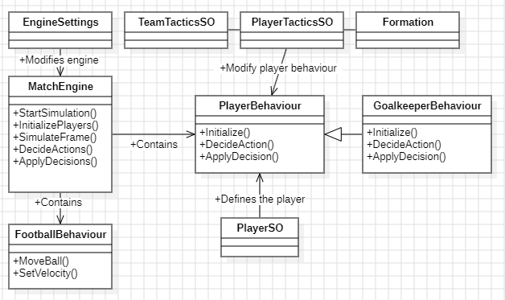
The engine centralises its tuning constants and tactical data as Unity ScriptableObjects, keeping the core MatchEngine, PlayerBehaviour and FootballBehaviour classes decoupled from the data that drives them.
On top of that, the engine separates cheap physics from expensive AI logic. The physical simulation advances at a fixed 30 frames per second, but re-evaluating a player's full decision-making at that same rate would be wasteful, since real footballers do not reassess their options dozens of times a second. On-the-ball decisions, like passing, shooting or dribbling, are evaluated every three physical frames (10Hz), while off-the-ball decisions, such as finding space, holding shape or marking, are staggered to every five physical frames (6Hz). The virtual pitch holds twenty-three dynamic entities in total: twenty-two PlayerBehaviour agents and a single FootballBehaviour ball, each writing their coordinates into pre-allocated arrays every physical frame so the rendering system can linearly interpolate a smooth broadcast independently of the underlying tick rate.
Logging every entity's position for all 162,000 physical frames of a 90-minute match is unavoidable, but duplicating static contextual data, like the scoreline, the foul count and the current phase of play, across those same frames would bloat memory for no reason. The engine solves this with a hybrid data-logging architecture: dense spatial arrays for kinematic data, alongside a sparse, event-driven MatchEvent timeline that only logs a new entry when something state-altering actually happens, such as the ball crossing the goal line or the referee issuing a card.
Every iteration of the simulation loop follows the same immutable six-step pipeline, enforcing a synchronised "Sense-Think-Act" paradigm across all twenty-two agents to guarantee fairness and determinism: the environmental state is updated first; spatial heuristics are (re)generated on logical decision frames only; all agents concurrently evaluate and lock in their decisions without yet touching the world state; those decisions are then executed and any conflicts resolved through a strict hierarchy: movement actions first, defensive actions second, on-the-ball actions last; kinematic integration and collision resolution follow; and finally, the frame's data is logged. This ordering is deliberate: giving defensive actions priority over on-the-ball actions, for example, ensures a tackle can interrupt a pass rather than the two resolving in an arbitrary, array-index-dependent order.
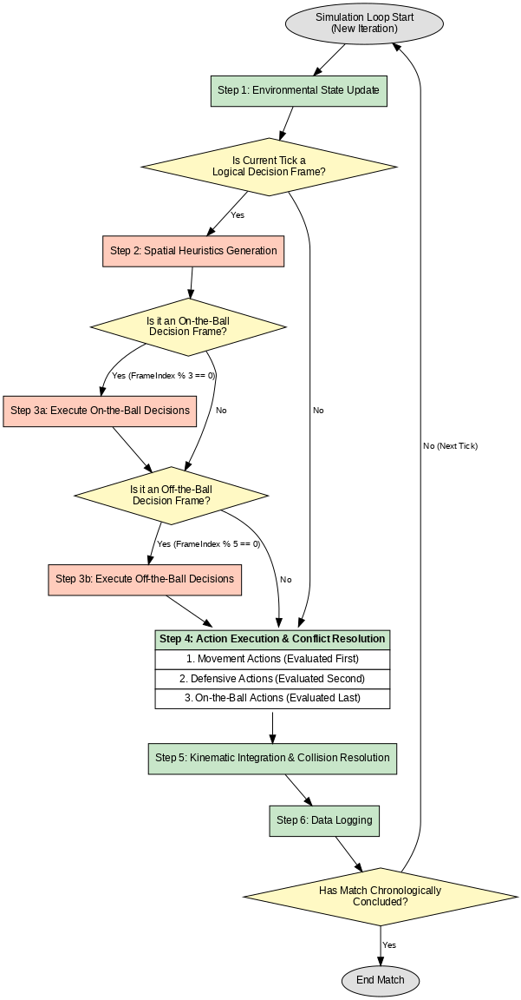
The six-step execution pipeline: environmental update, spatial heuristics generation, concurrent decision-making, conflict-resolved action execution, kinematic integration and data logging, repeated every physical frame until the match concludes.
Utility-Based AI & Spatial Heuristics
Three standard game AI paradigms were evaluated for the agents' cognitive architecture: Finite State Machines, Behaviour Trees and Utility-Based AI. Pure FSMs quickly run into the well-documented "state explosion" problem, where every additional tactical variable multiplies the hardcoded transitions needed to cover every edge case. Behaviour Trees are more modular, but execute the first valid branch they find top-to-bottom, which struggles to weigh a "valid" pass against an objectively better shot. Utility AI was chosen instead: every action available to an agent is scored simultaneously as a scalar utility value, and the agent simply executes whichever action scores highest, which naturally handles football's constant trade-offs between risk and reward. That continuous Utility AI is nested inside an overarching GameState state machine, which filters the pool of actions an agent is even allowed to evaluate.
Before an agent can evaluate its options, it needs a mathematical understanding of the space around it. To achieve this, the pitch is divided into a uniform grid of one-meter-squared cells. Drawing from William Spearman's published model, the engine calculates Pitch Control, the probability that a specific team will secure a given location before their opponents. Rather than relying on simple distances or only looking at the single closest player, this model evaluates the aggregate spatial influence of all twenty-two players on the pitch. An individual player's influence over a cell decays exponentially based on their estimated kinematic arrival time. By summing these influences together, the engine determines the total territorial dominance of each squad, mapping the final result onto a fluid 0.0 to 1.0 probability scale.
The Pitch Control overlay rendered directly over the pitch geometry: a bidirectional colour gradient where values approaching green mark space controlled by the team out of possession, and values approaching purple mark space controlled by the team in possession.
Alongside Pitch Control, every cell evaluates its tactical usefulness through a composite Spatial Value. This blends two specific metrics: a static Danger Value, determined by the cell's proximity and angle to the opponent's goal, and a dynamic Ball Proximity Value, which applies a Gaussian decay centered around the football's current location. By weighting these together, agents inherently prioritize areas that are both offensively threatening and relevant to the immediate phase of play.
To make intelligent off-the-ball runs, agents also evaluate micro-level isolation using an Open Space Value. Every player projects a spatial footprint (an ellipse skewed in their direction of movement) and a cell's score drops toward zero if footprints overlap. This mechanic is directly derived from Fernandez and Bornn's "Wide Open Spaces" concept. However, while the original academic model was used to evaluate historical match data after the fact, this engine reverses the paradigm: it acts as a real-time, predictive heuristic that allows attackers to dynamically identify and run into safe pockets of space before they close.
With this spatial understanding established, the Utility AI evaluates every available action, such as passing, shooting, tackling or moving, by calculating a raw heuristic score between 0.0 and 1.0. Rather than scaling this value linearly, the engine passes it through an asymptotic response curve. This mathematical weighting acts as an extreme amplifier for high-confidence actions, organically allowing highly optimal or rewarding choices to overpower lesser, ambiguous options. The action that achieves the highest final utility score is then packed into a decision structure and translated into physical execution by the engine.
Attributes & Tactical Instructions
Every one of the twenty-two players on the pitch is defined by twenty-one discrete attributes on a 1-20 scale, split across four categories: Technical (Crossing, Dribbling, Finishing, First Touch, Heading, Passing, Tackling), Mental (Composure, Off The Ball, Positioning, Vision), Physical (Acceleration, Agility, Jumping Reach, Pace, Strength, Height, plus Stamina as a static placeholder for future work) and Goalkeeping (Handling, Reflexes, Punching). These raw 1-20 values are meaningless on their own, so the engine normalises and translates them into its mathematics through five distinct paradigms depending on context:
- Time-Dependent Probabilities: actions like a goalkeeper catching the ball use a cumulative exponential distribution function, where the attribute steepens the curve so a higher Handling rating needs measurably less time in reach of the ball to guarantee a secure catch.
- Trajectory Variance: kicking actions (passing, shooting, crossing) model biomechanical error as a standard deviation on the resulting ball velocity. Below a player's "comfortable velocity" threshold, error grows on a gentle quadratic curve; push beyond it, and the penalty turns exponential, with both its steepness and its ceiling directly modulated by the player's technical attribute, so a weaker player's technique visibly breaks down under a hopeful long-range strike.
- Logistic Comparisons: direct duels (a tackle against a dribble, a collision) resolve by passing the difference between both players' relevant attributes through a logistic sigmoid, tuned so the best possible player (20) still concedes the worst possible player (1) roughly a 1% chance of winning the duel. Statistical superiority is heavily rewarded without ever making upsets mathematically impossible.
- Linear Interpolation: purely physical limits, like top pace or acceleration, interpolate directly between the engine's minimum and maximum kinematic bounds. Reactionary limits, like a goalkeeper's reflexes, use the same interpolation inverted, since a lower physical delay is the advantageous outcome.
- Cognitive Distortion: mental attributes like Vision and Positioning don't touch physical execution at all, they distort an agent's own perception of the spatial heuristics. A perfect Vision score of 20 perceives Pitch Control and Spatial Value exactly as calculated; a poor score exponentially crushes those same probabilities, so a mentally weaker player effectively can't "see" a risky pass as viable in the first place, without any hardcoded rule ever telling them not to attempt it.
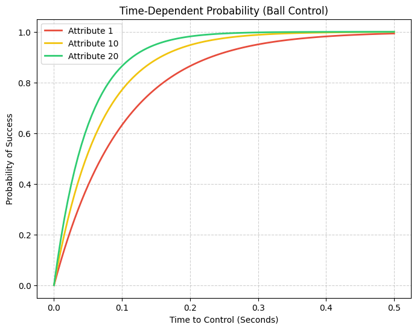
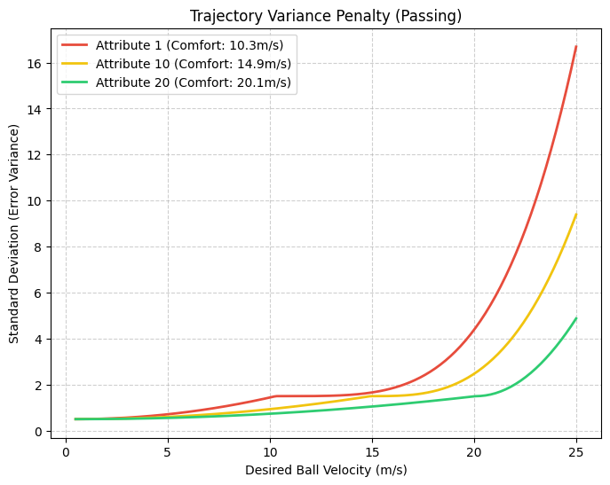
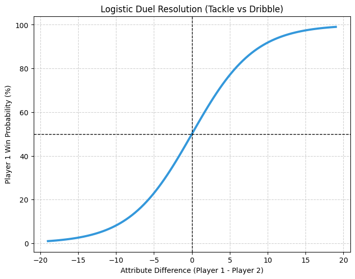
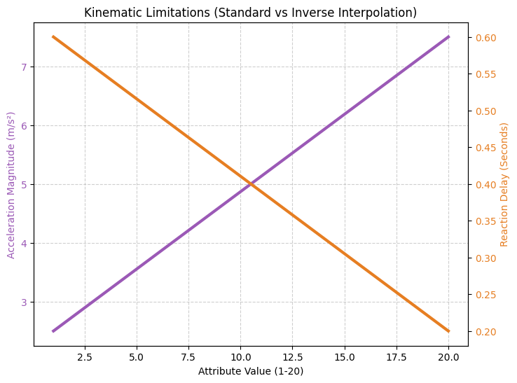
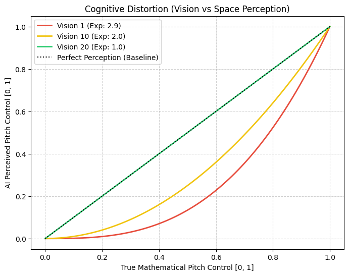
Mathematical models used to translate raw 1-20 player ratings into functional engine logic. Swipe through to view the curves for time-dependent probabilities, exponential trajectory variance penalties, logistic duel resolution, linear kinematic interpolation and cognitive spatial distortion.
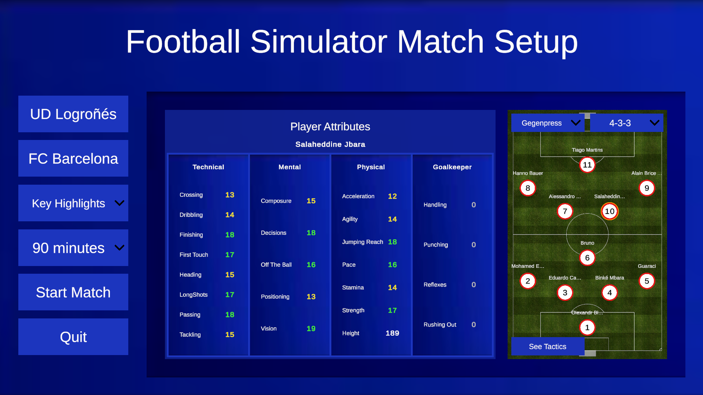
The tactical menu's player configuration panel, showing a selected footballer's full technical, mental, physical and goalkeeping attribute breakdown.
On top of individual player abilities, the manager's tactical instructions dynamically reshape the AI's decision-making without relying on rigid, hardcoded rules. The engine achieves this by using tactical weights to alter how players mathematically perceive risk. For example, instructing a team to play safely alters the mathematical exponents in the engine's probability formulas, heavily penalizing risky passes and effectively removing them from the player's consideration. Conversely, a more adventurous instruction flattens those penalties, making ambitious passes mathematically attractive to the AI. Furthermore, linear multipliers are applied to increase or decrease the overall frequency of specific actions, such as shooting or dribbling, while also scaling the intensity of off-the-ball movement and team shape.
To keep this system accessible, these complex mathematics are never directly exposed to the user. Instead, high-level tactical concepts like tempo and verticality are presented as simple visual sliders. A neutral slider setting automatically maps to the engine's baseline mathematical defaults, while adjustments smoothly scale the underlying multipliers. These instructions operate across two hierarchical layers: macro-level team instructions that govern the entire squad, and micro-level player instructions that allow specialized roles to override the team's baseline rules. Finally, all of this logic is grounded by the chosen formation, which assigns a specific geometric coordinate to each role, physically restructuring the team's shape on the pitch before any movement algorithms run.
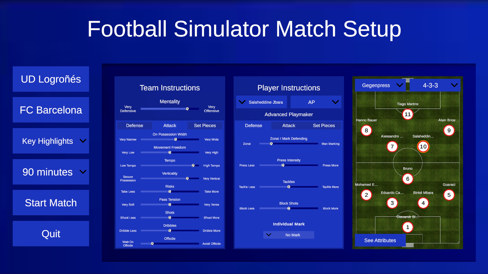
Team and player instructions are exposed as continuous sliders across attacking, defending and set-piece tabs, each one mapping directly onto the exponents and multipliers driving the Utility AI beneath.
Match States & Infractions
The engine's global structure operates as a Finite State Machine governed by nine distinct match states, ranging from OPEN_PLAY to CORNER_KICK or PENALTY_KICK. During every physical frame, the engine evaluates the ball's coordinates against the pitch boundaries to trigger the appropriate state transitions. The moment play is interrupted, the fluid Utility AI is temporarily overridden by strict, rule-based directives. The designated set-piece taker is immediately relocated to the ball based on the manager's tactical instructions, while the remaining players adopt specific set-piece tasks, such as GO_INTO_BOX or DEFEND_THE_BOX. To ensure strict adherence to real-world football regulations, hardcoded exclusion zones, such as the mandatory radius around a free kick or the edge of the penalty area, restrict all other agents' movement until open play resumes.
Offside detection uses a two-phase spatial snapshot rather than continuous frame-by-frame prediction. The first phase triggers the instant a player touches the ball, calculating the offside line along the pitch's longitudinal axis as the deepest of three reference points: the second-to-last defender, the ball itself, and the halfway line. Every attacker beyond that line is flagged internally, but being in an offside position is not yet an infraction. The second phase only resolves when the ball is touched again, and only becomes a foul if that next touch belongs to a player who was flagged in the original snapshot. The whole mechanism is explicitly bypassed for throw-ins, mirroring the sport's own laws.
The two-phase offside snapshot in action: the offside line is calculated at the moment of the pass, and the flag is only raised once a player who was already beyond that line makes the next touch.
Fouls, by contrast, are never triggered by an arbitrary scripted event. They emerge from the same kinematic and probabilistic data driving everything else. A tackle against a dribbler resolves through the same logistic sigmoid used for any other duel, with a fixed percentage of the dribbler's own success probability converted directly into a foul probability, modelling a defender who has been technically beaten and resorts to an illegal challenge. A loose-ball ground duel works differently again, deriving its foul probability from the exact kinematic state at the moment of impact: how far each player was from the ball, how fast they arrived, and who actually held possession; so a player arriving late, at speed, with no claim to the ball mathematically triggers a high chance of committing a foul. Disciplinary outcomes aren't arbitrary either: the probability of a given foul producing a yellow or red card is drawn directly from the real card-per-foul ratios recorded across the Spanish LaLiga's 2025-2026 season.
A mistimed, high-velocity ground duel resolving into a foul and a card, with the disciplinary outcome drawn from real card-per-foul ratios recorded across LaLiga's 2025-2026 season.
Corners are the one moment the simulation steps outside its 2D plane entirely, introducing a third spatial dimension purely for the aerial duel. The designated taker projects a three-dimensional velocity vector rather than a ground pass, and an initial vertical velocity against constant downward gravity produces a parabolic arc engineered to maximise hang time inside the densely populated penalty box. While the ball is airborne, the state machine locks into a transitional CORNER_IN_PLAY state to prevent the other 21 agents from immediately abandoning their assigned tasks and scattering back toward their standard formation coordinates before the cross even lands. Contesting players evaluate the header using two combined physical attributes, Height and Jumping Reach, against the ball's decaying vertical trajectory.
A corner kick resolving in three dimensions: a parabolic cross into the box, contested by height and jumping reach as the state machine holds every other agent in its designated marking position.
Visualisation Modes & UI
Because the engine's mathematical logic is fully decoupled from Unity's rendering loop, the match can be watched in three distinct ways, all reading from the exact same underlying simulation data. Live Simulation renders the match synchronously as each physical frame resolves. In this mode, the tactical menu remains fully interactive for real-time adjustments, and a playback speed slider scales the pace. Additionally, it incorporates a dynamic analytical overlay system for visual debugging, allowing users to toggle graphical representations of underlying spatial heuristics, such as Pitch Control, Danger Value and Open Space, directly onto the 2D pitch. Key Highlights simulates the match asynchronously in the background, evaluating each discrete chunk of play (defined by the state machine, from kick-off to the ball going out of play) for significant events. Anything flagged as a shot, a goal or a penalty gets rendered with a contextual time buffer around it, while mathematically uninteresting stretches are skipped entirely, all without ever losing tactical interactivity. Offline Visualisation goes further still, resolving the entire ninety minutes computationally in the background before rendering a single frame. Because the result is already sealed, the tactical UI locks, but the user gains the ability to freely scrub backward and forward through the complete match.
Live Simulation: the match rendered synchronously in real time, featuring dynamic analytical overlays to visually track underlying spatial heuristics while keeping the tactical menu available for adjustments as the game develops.
Key Highlights: the engine simulates in the background and only renders the segments surrounding significant events, skipping mathematically uninteresting periods of play.
Offline Visualisation: the full ninety minutes resolved in the background, ready to be scrubbed and replayed freely once the result is sealed.
Regardless of the active mode, playback reads from the same continuous reproduction index (conceptually the needle of a record player) sweeping across the physical simulation's fixed 30Hz data and linearly interpolating it up to the display's own refresh rate, so motion stays fluid independently of the underlying tick rate. Every goal, red card and yellow card dynamically instantiates an entry on an interactive event timeline; clicking any entry's minute detaches the reproduction needle, jumps straight to that moment, plays the replay, and automatically snaps back to the live position once it concludes.
Live Simulation also exposes the engine's invisible spatial reasoning directly on the pitch through a toggleable analytical overlay, generated by mapping the underlying floating-point grid data onto a dynamic 2D texture rendered over the pitch geometry. Pitch Control renders as the bidirectional colour gradient shown above, while the remaining normalised heuristics (Danger Value, Ball Proximity, Open Space and the composite Spatial Value) use a direct monochromatic mapping from black at 0.0 up to white at 1.0. This overlay doubled as the primary debugging tool for validating and tuning the AI during development.
Performance & Optimization
The first working version of the engine was entirely CPU-bound, processing physics, spatial heuristics and all twenty-two agents' decision-making sequentially on a single thread. Because Unity's standard update loops and UI rendering also run on that same main thread, this sequential workload actively blocked the application until every calculation finished, which cascaded into failure across all three visualisation modes: Live Simulation dragged well under 30fps and made the playback speed slider functionally useless, since the CPU was already maxed out just calculating a single frame; Offline Visualisation froze the entire application while it processed in the "background", taking almost as long as watching the match live; and Key Highlights was rendered technically impossible outright, since the UI had no opportunity to update while the sequential loop held the main thread hostage.
Resolving this required a fundamental shift towards concurrency, executed through two distinct optimisations. First, rather than offloading the entire simulation to background threads and fighting Unity's rendering pipeline for synchronisation, the engine implements a batch-processing asynchronous model: for Key Highlights and Offline Visualisation, it calculates a high-speed batch of thirty consecutive physical frames before explicitly yielding control back to Unity's main loop, letting the UI stay responsive without losing raw throughput. Second, the twenty-two agents' individual decision-making was moved from a sequential per-agent loop to task parallelism, dispatched concurrently across the CPU's available threads and held behind a strict synchronisation barrier so the simulation only advances once every single agent has safely resolved its decision, preventing race conditions on shared state like the ball's position.
Even after parallelising the CPU, Unity's Deep Profiler identified two remaining bottlenecks: generating the Pitch Control grid consumed nearly half of an average frame's execution time, and evaluating a single pass decision could spike a frame's cost by a factor of 10-20x. Both problems share the same underlying property: every cell on the spatial grid is mathematically independent of its neighbours, an "embarrassingly parallel" workload that sequential CPU cores handle poorly but that GPUs, built around a Single Instruction, Multiple Data architecture with thousands of small cores, are purpose-built for. Both algorithms were ported from sequential C# to HLSL Compute Shaders, with per-frame data packed into memory-aligned, primitive-only structs and transferred to the GPU through Unity ComputeBuffer objects.
This introduced one final constraint: ComputeShader.Dispatch calls, along with any GPU buffer allocation, can only legally execute from Unity's main thread, which directly conflicts with dispatching agent decisions across background threads. The fix is a targeted synchronisation lock rather than an all-or-nothing compromise. Every standard agent continues evaluating its kinematic steering behaviours concurrently in the background, while only the specific agent currently in possession of the ball halts its asynchronous execution to safely dispatch the compute shader, wait on the GPU readback, and map the result into its final decision before releasing the lock.
The combined architecture reduced average frame execution time from 24.43ms (already above the 16.6ms budget for a smooth 60fps) down to 1.47ms in a release build, a 94% reduction, and cut the full background simulation of a five-minute match from 222.4 seconds down to 15.2 seconds. Isolated in the profiler, the pass decision heuristic alone, the single most expensive call in the engine, dropped from 56.62ms to roughly 1.03ms once GPU offloading and CPU parallelism were combined.
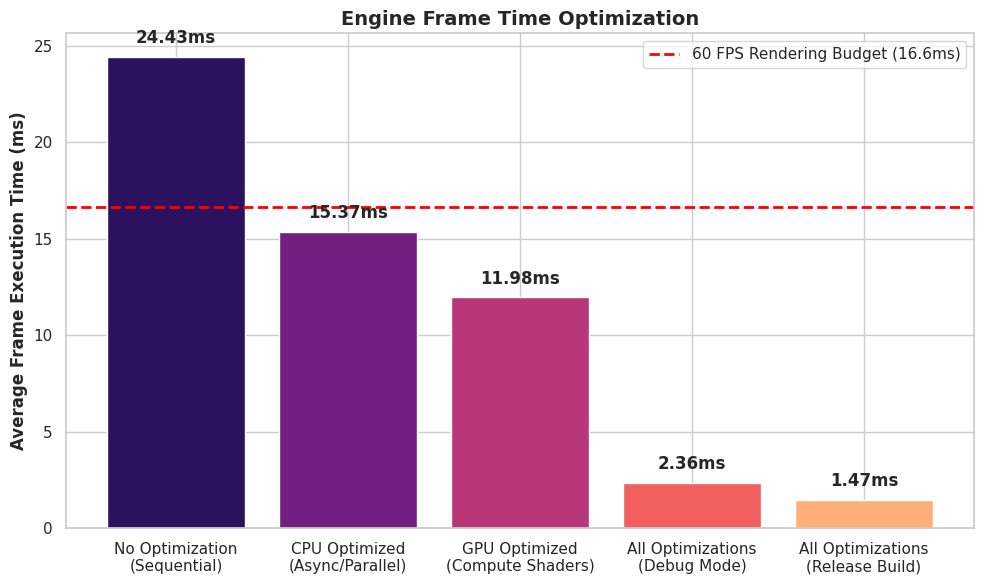
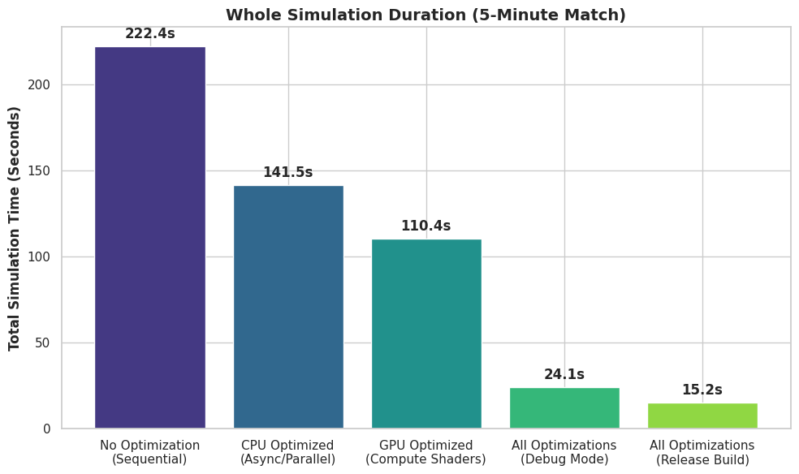
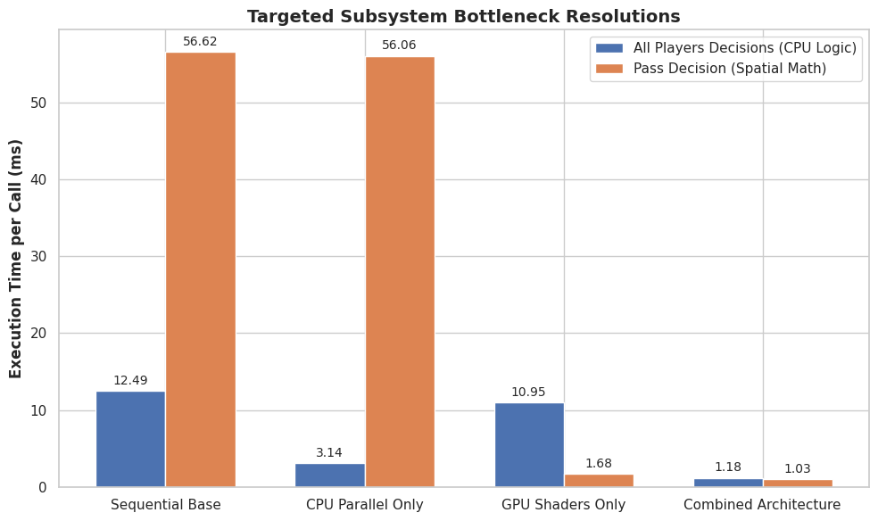
Performance benchmarking results measured on an Intel Core i7-12700K / AMD Radeon RX 6600 workstation. Swipe to view the impact of CPU multithreading and GPU compute shaders on average frame execution time, total simulation duration, and targeted subsystem bottlenecks.
Future Roadmap & Next Steps
While the current state of the match engine fulfills the requirements of a complete tactical prototype, there are several clear avenues for future expansion to elevate the simulation to a more complex, commercial standard:
- Full 3D Integration: The spatial simulation currently operates almost entirely on a 2D plane, with the z-axis strictly reserved for aerial duels during corner kicks. Transitioning the entire spatial evaluation grid and physics system into three dimensions would unlock advanced open-play mechanics, such as lobbed through-balls, precise crosses from the wings and complex ball-bouncing physics.
- Dynamic Fatigue and Substitutions: Although the foundational player data structure includes a Stamina attribute, it currently remains static. Implementing a continuous fatigue system would dynamically degrade players' kinematic capabilities and technical execution thresholds over 90 minutes based on athletic exertion. This directly paves the way for in-match substitutions, allowing managers to tactically replace exhausted agents and completing the core managerial gameplay loop.
- Player Orientation and Strong Foot: The autonomous agents currently possess an unconstrained 360-degree ball-playing capacity, allowing them to execute passes and shots without prior physical rotation. Introducing physical orientation constraints and weak-foot execution penalties would drastically increase mechanical realism, forcing agents to dynamically adjust their body shape before striking the ball and altering their utility evaluations based on their preferred foot.
Core Implementation Highlight: Massively Parallel Pass Evaluation via Compute Shaders
Evaluating the optimal pass is the most computationally expensive decision in the engine. To find the best option, the AI evaluates the spatial grid across multiple different kick velocities, calculating interception probabilities, biomechanical variance and spatial danger for each combination. Processing this sequentially on the CPU caused severe performance bottlenecks, taking over 56 milliseconds per frame.
Because every cell evaluation is mathematically independent, I ported the pass evaluation logic to an HLSL Compute Shader. The C# engine packs the current match state, such as ball velocity, player positions and current pitch control data, into memory-aligned primitive structs and uploads them to the GPU via ComputeBuffer objects.
The most interesting architectural detail is the dispatch structure. The compute shader utilizes a 3D thread group grid: the X and Y axes map directly to the 2D pitch coordinates, while the Z axis evaluates the varying pass velocities. This allows the engine to simultaneously evaluate thousands of spatial and kinematic permutations, mapping the highest-scoring result back to the CPU in roughly 1 millisecond.
public GPUPassDecisionOutputData DispatchPassDecisionComputeShader(
GPUPassDecisionPlayerPerFrameInputData playerPerFrameData,
GPUPitchControlOutputData currentPitchControlData)
{
// 1. Pack per-frame environmental data (ball state, game state, target goal) into tightly aligned structs
m_GPUPassDecisionPerFrameInputData[0].m_FootballPosition = m_Football.GetPosition();
m_GPUPassDecisionPerFrameInputData[0].m_FootballVelocity = m_Football.GetVelocity();
m_GPUPassDecisionPerFrameInputData[0].m_CurrentGameState = (int) m_CurrentGameState;
m_GPUPassDecisionPerFrameInputData[0].m_PlayerWithBallControlledIndex = m_Football.GetPlayerWithBallControlled() != null ? m_Football.GetPlayerWithBallControlled().GetPlayerIndex() : -1;
m_GPUPassDecisionPerFrameInputData[0].m_DefendingGoalPosition = m_Football.GetTeamInPossession() == Team.TEAM_1 ? m_LeftGoalPosition : m_RightGoalPosition;
m_GPUPassDecisionPerFrameInputConstantBuffer.SetData(m_GPUPassDecisionPerFrameInputData);
// 2. Upload player-specific tactical weights and current pitch control data to the GPU buffers
m_GPUPassDecisionPlayerPerFrameInputData[0] = playerPerFrameData;
m_GPUPassDecisionPerFramePlayerInputConstantBuffer.SetData(m_GPUPassDecisionPlayerPerFrameInputData);
m_GPUPassDecisionCurrentPitchControlInputData[0] = currentPitchControlData;
m_GPUPassDecisionCurrentPitchControlInputBuffer.SetData(m_GPUPassDecisionCurrentPitchControlInputData);
// 3. Calculate dynamic dispatch dimensions
// The pitch grid is split across X and Y, while the Z axis handles the iterative velocity steps
int threadGroupsX = Mathf.CeilToInt(m_GridWidth / 8.0f);
int threadGroupsY = Mathf.CeilToInt(m_GridHeight / 8.0f);
int threadGroupsZ = Mathf.CeilToInt(m_EngineSettings.m_PlayerEngineSettings.m_PassVelocityEvaluationSteps / 5.0f);
// 4. Dispatch the compute shader across thousands of GPU threads simultaneously
m_PassDecisionComputeShader.Dispatch(m_PassDecisionCSKernel, threadGroupsX, threadGroupsY, threadGroupsZ);
// 5. Retrieve the processed array of scores
m_GPUPassDecisionOutputBuffer.GetData(m_GPUPassDecisionOutputData);
return MapGPUPassDecisionDataToCPU();
}